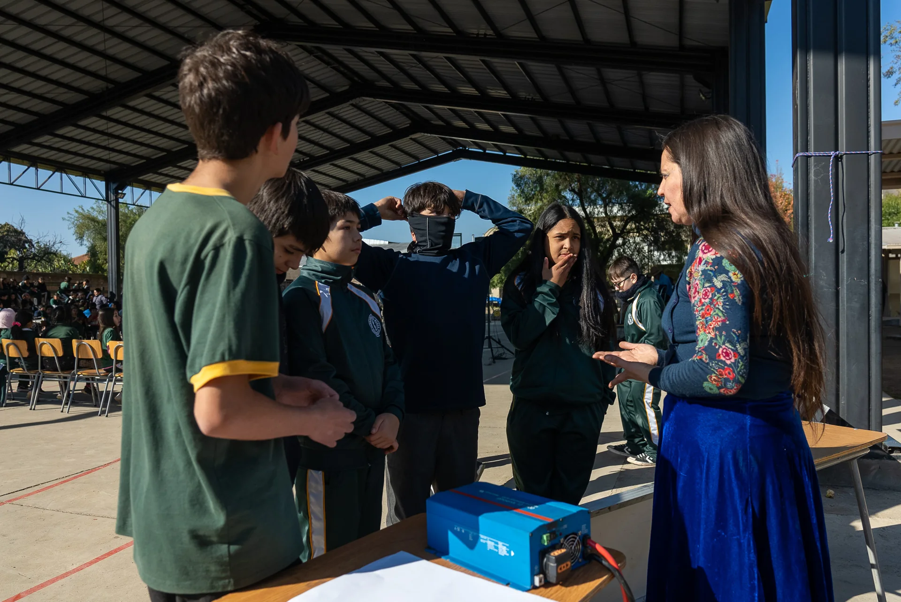
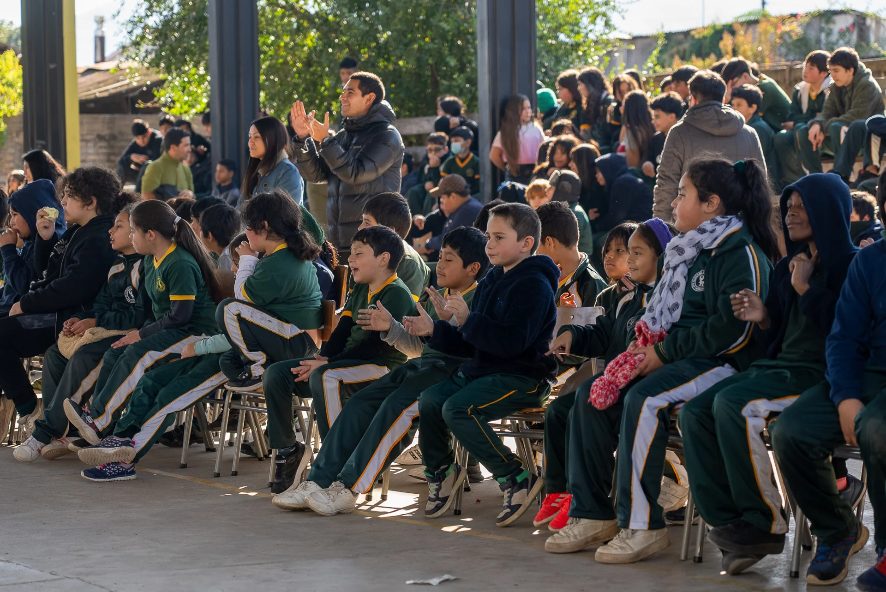
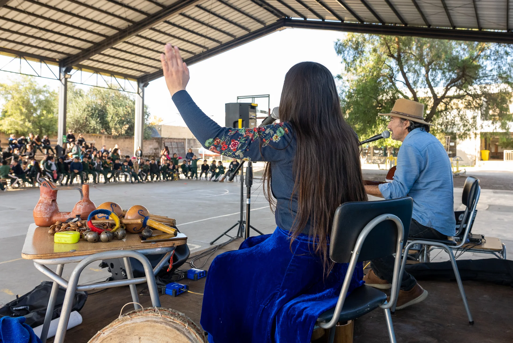

En el marco de la Semana de la Educación Artística (SEA), el grupo musical Kalfumalén da inicio a la ejecución de su proyecto FAE 2024 “El Buen Vivir, Gira de Eco-conciertos Didácticos con Kalfumalen”, con un primer hito de presentación el día jueves 17 de mayo en el Colegio Olegario Lazo Baeza de la comuna de San Fernando.

Gracias al Fondo de Fomento del Arte en la Educación, la agrupación liderada por la Mariel Labra, creadora musical y gestora cultural junto al cantor a lo poeta y cultor tradicional Rodrigo Núñez, iniciaron una gira de siete eco-conciertos didácticos y de mediación artística del disco “El Buen Vivir” (2021) en siete establecimientos educacionales de las regiones de Valparaíso y O’Higgins.
El disco “Buen Vivir” está compuesto por nueve canciones que integran diferentes ritmos de América Latina y el mundo, con una fusión original, que se propone transmitir un mensaje de esperanza, ecología e integración a través de letras que son poesía. Utiliza instrumentos como guitarra acústica, guitarra eléctrica, voces, bajo eléctrico, batería, quena, quenacho, zampoña, palahuito, ocarinas, botella silbadora, charango, accesorios de percusión latina, saxofón soprano, canto de armónicos. En el disco también participan los músicos Andrés Soto, Víctor Nauto, Ibar Huerta y Guillermo Riaño.

“El proyecto busca por un lado acercar estas experiencias artísticas a las escuelas, en este caso la experiencia de un concierto didáctico que invita al diálogo y la reflexión, tanto de los instrumentos musicales que se utilizan como de los conceptos que se exponen en las canciones. El disco busca reflexionar sobre cómo habitamos el planeta desde el concepto del buen vivir, idea profundamente arraigada en la cosmovisión de los pueblos originarios de latinoamérica”, indica Mariel Labra.
Las actividades en los establecimientos incluyen la entrega de un set educativo Kalfumalén consistente en discos, cuadernillo y cancionero educativo, además de semillas para el huerto escolar. “Mariel ha sido un gran aporte desde que ingresó a la escuela por cómo desarrolla el lenguaje, el arte y la cultura en todos sus proyectos y cómo involucra a los estudiantes desde muy chiquititos de primero a octavo básico” señaló Marcela González Ruz, directora del colegio Olegario Lazo Baeza, quién además recibió el set educativo para el establecimiento.
La gira de eco-conciertos forma parte de los 17 años de trabajo de la agrupación Kalfumalén, sumándose así a los objetivos y proyectos que han sido sostenidos a través de los años por sus fundadores, forjando así una identidad y propuesta única en la Región de O’Higgins.
